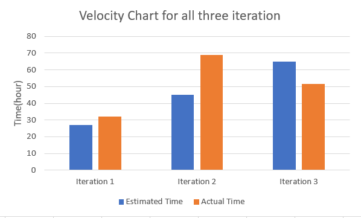

Sales pitch:
Our application makes peoples life much organized and easier.
Avoid people accidentally forgetting important things
Postmortem
Positive point:
We have a good working environment. Everyone is willing to offer help for people who meet problems. There is no any complaints during the whole project
development. Even someone of our group is in the difference time zone, what we do is trying to coordinate our time so that everyone can participate in the group
meeting.
Negative Point:
In the iteration 2, we made a poorly estimation for how long dev task should be done.
Improvement after iteration 2 retrospective:
During the iteration 3, we have more group coding session via discord. All the issues we created were asigned to individual team members this time.
We merged earlier in iteration 3 so that we can have more time to review and fix errors.
Velocity Chart:
For the iteration 1, we did a pretty accurate estimation. However, in the iteration 2, because we were refactoring a ton,
and learning how to do a bunch of new stuff like hsqldb and ui and android, etc. that is why
the actual time spent on the project is much longer than expected. For the last iteration, we had a more accurate estimate from previous two iterations' experience.
